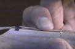
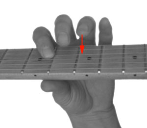
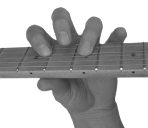
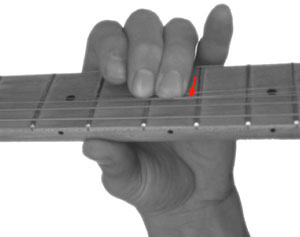
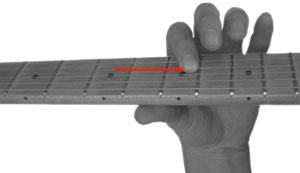
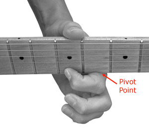

Holding a pick properly will ensure that you can play as fast as possible. The goal is to have a firm grip so it plucks the string firmly with both downstrokes toward the floor and upstrokes toward the ceiling. The proper way to hold the pick is between your bent index finger and thumb. The amount that it sticks out is a personal preference, and it might also affect the stiffness of the pick that you prefer.
Do not pinch the pick. Pinching makes it harder to play fast because it makes it harder to use your wrist and elbow to help you play. It can also lead to an uneven picking angle. Remember, Holding a pick properly will prevent bad habits that slow down your playing.
Fretting Notes

Fretting a note is one of the most basic skills for playing the guitar. Many guitarists have formed bad habits that slow their playing. The most important point is to have a proper finger arch so you touch only the string that you want to fret. It also allows you to reach every string. To do this, your thumb usually needs to be placed behind the neck and not over it. Playing closer to the fret also lessens the potential for buzzing.
Hammer-ons
Hammer-ons and Pull-offs produce a legato sound on a single string. Legato is sounding notes so they connect smoothly. For guitar, this means you don’t separate the notes by plucking the string again on the second note. Both hammer-ons and pull-offs are notated with a slur. The only distinction between the two techniques is that hammer-ons slur to a higher pitch while pull-offs slur to a lower pitch.


Pull-offs
Pull-offs are the exact opposite of hammer-ons. To play a pull-off, you play a note then you fret a note behind the one you just played, finally you pull your finger off the first note without re-plucking the string. Like hammer-ons, the notes will transition smoothly.
String Bending
Bends are a great way to add interest to your playing. Bends raise the pitch of the note. The amount of pitch change depends on the distance you bend. Usually, you want to change the pitch by a half step or a whole step. Sometimes you want to change it even more, but you’ll need some good calluses on your fingers for that!

Sliding
Slides are executed on a single string. You play a note then slide your finger up or down the fretboard to a second note without taking it off the fretboard.
Sliding up is in the direction towards the bridge (raising the pitch of the note). Sliding down is the direction toward the neck (lowering the pitch of the note).
There are two types of slides: shift slides and legato slides. They are the same except shift slides pluck the string again on the second note. In my experience, most slides are legato slides.
In notation, both use a diagonal line to denote a slide. Legato slides add a slur, which is a curved line that connects two notes.It means to play the two notes as smoothly as possible.

Vibrato
If you ever watched B.B. King play, he has one of the best vibrato techniques out there. He uses the ball of his hand (the joint where your finger attaches to your hand) as a pivot point so he can use his wrist muscles to pivot his hand while fretting a note. This motion pulsates the pitch of the note. You can emulate this sound with your voice by singing a note and pushing on and off your chest.
